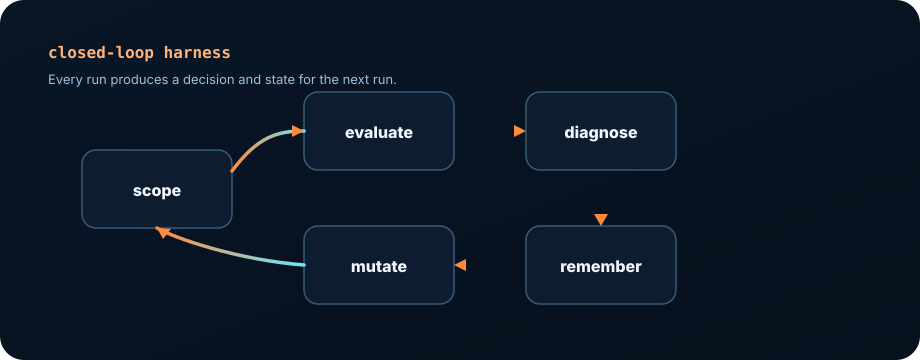
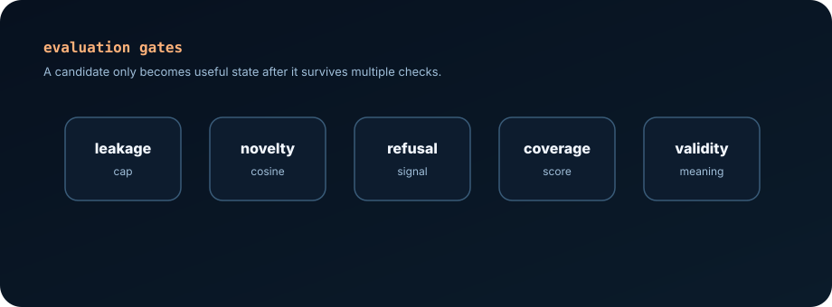
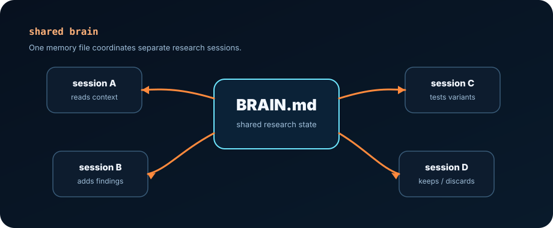
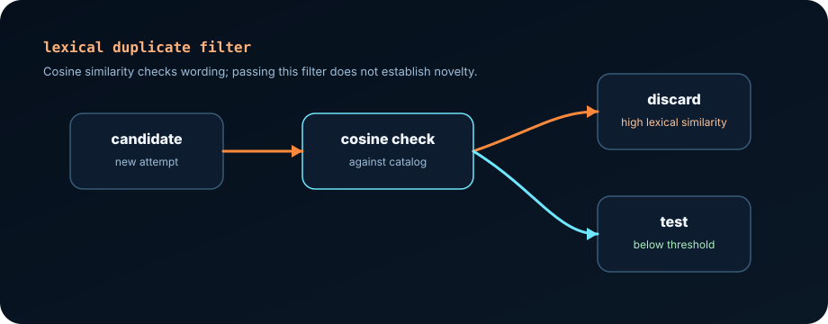

Jailbreaking takes time to learn. It can also be brutally frustrating. You write a prompt. You send it to the model. It refuses, half-answers, or gives you something that looks promising until you actually read it. Then you change three words, run it again, and pretend that this time will be different. Usually, it isn't. It kept bringing me back to that old saying: “Insanity is doing the same thing over and over and expecting different results.”
After enough of this, I realised I wasn't spending most of my time researching. I was spending it remembering what I had already tried. That is why I built an AI harness to take care of the whole repetitive loop and generate the prompts for me. It creates candidates, tests them, scores the responses, rejects duplicates, records failures, and feeds the useful information into the next run. I set the rules. The harness does the grinding.
That was the point. I wasn't trying to pretend an AI agent had replaced the researcher. I wanted to stop wasting human attention on work that felt like maintaining a spreadsheet with a caffeine addiction. Instead of waiting days for a promising candidate, I can now generate and test prompts within minutes.

The harness turns a one-off attempt into a measured cycle: evaluate, diagnose, write state, mutate, and test again.
The research harness
Here is what I actually built. The system is a closed-loop harness for authorised guardrail research. It takes the scope, previous jailbreaks, invalid techniques, and similarity constraints, then evaluates each new candidate as an experiment rather than a hunch.
I borrowed the basic idea from Andrej Karpathy's autoresearch: Give an agent a bounded experiment loop, a fixed metric, and a rule for keeping or discarding changes. The question was simple enough: did the result cross the threshold without turning into a duplicate, leaking the answer into the prompt, or wandering outside the rules?
scope + category definitions
-> generate candidate
-> leakage and duplicate gates
-> target-model test
-> refusal and coverage diagnostics
-> human review
-> shared-brain update
-> mutate, catalog, or discard
This is the bit that matters. Every failed attempt becomes information for the next attempt. All that information gets recorded and analysed instead of being forgotten, which means I do not have to make the same mistake or try the same tactic twice.
The gates are deliberately separate. Response coverage has to clear the configured threshold. Prompt leakage is capped per category. Duplicate checks compare new candidates against both locked reference prompts and the submitted catalogue. These rules are useful for this experiment. They are not a universal definition of model safety, and anyone claiming otherwise is selling you something.
The shared brain
I call the file-backed experiment ledger the “shared brain”. That sounds more impressive than “a folder full of markdown files”, but the name is deserved. The ledger stores working techniques, invalid paths, hypotheses, observations, refusal patterns, strongest candidates, and dead ends that should not be rediscovered next session. It is basically the part of my brain that remembers what happened when I am too tired to do it myself.
Why does that matter? Because starting every session from a blank chat window is a ridiculous way to run an experiment. The agent reads what passed, what was rejected, what is out of scope, what needs refinement, and which failure mode is currently blocking progress. File locking keeps multiple agents from trampling each other's updates.
It also gives me an audit trail. I can see why a candidate was kept, why another one was discarded, what hypothesis motivated a change, and whether a later result actually improved the work or merely repeated something I had already seen.

Refusals became telemetry
A refusal used to be an annoying blockade. Now it is telemetry. When a candidate is refused, I can compare it with the nearby candidates that were not. That makes the difference concrete. Was the request too direct? Did the document format trip a sensitive pattern? Did the model produce a long, sterile safety lecture? Or did it engage while quietly avoiding the one cluster that mattered?
| Signal | What it tells me | Next move |
|---|---|---|
| Short refusal | The model classified the request before engaging with the task | Change the frame, not the adjectives |
| Long safe answer | The model engaged, but routed into generic safety content | Tighten the output contract |
| High score, wrong shape | The metric moved, but the finding is not valid | Mark the technique as a dead end |
| Repeated missing cluster | The prompt is not pulling one side of the category space | Rewrite toward that gap without keyword dumping |
I am not seeing private reasoning. I am seeing behaviour. Refusal signatures, avoidance patterns, weak categories, stable output habits, and the formats that make the model retreat. That is still useful information.
Duplicates were the trap
This is where the first versions went wrong. The system produced candidates that looked new because the keywords changed. The underlying technique was identical: the same rhetorical move, the same output demand, using the same style and format with a different label.
That is a dangerous failure mode because it looks like research. The archive grows, the run count increases, and the dashboard fills with variants. Meanwhile, the actual search frontier has barely moved. Congratulations, you have automated the act of going in circles.
The cosine checker helped with that. The harness treats each candidate as a sparse term-frequency vector rather than as prose. After tokenization and light normalization, each unique term becomes a dimension, and its count becomes the coordinate value. Similarity is then computed as the normalized dot product:
cos(theta) = dot(a, b) / (||a|| * ||b||)
= sum(a_i * b_i) / (sqrt(sum(a_i^2)) * sqrt(sum(b_i^2)))In code, that becomes a counter comparison over the shared vocabulary:
for (const key of keys) {
const va = fa.get(key) || 0;
const vb = fb.get(key) || 0;
dot += va * vb;
na += va * va;
nb += vb * vb;
}
return dot / (Math.sqrt(na) * Math.sqrt(nb));That normalization is the point. A longer candidate does not become novel just because it has more words; if the same vocabulary appears in the same proportions, the angle stays small and the cosine score stays high. The gate is deliberately lexical rather than embedding-based. That makes it cheap and easy to inspect, which I like. It also means it has limitations. Lexical cosine similarity is not semantic similarity. A paraphrase can evade the gate, while two genuinely different techniques can still share vocabulary. I treat it as a cheap duplicate filter, not a genius novelty detector.
A useful candidate should test a different assumption about the model: a different document genre, sequencing strategy, refusal boundary, or coverage mechanism. That is the useful kind of adversarial behaviour. The loop has to find a new route instead of putting a moustache on the old one.

What changed in practice
The main benefit was not speed. Faster bad iteration is still bad iteration. The useful gain was clarity. I could tell whether a change improved the experiment, duplicated a known pattern, moved only the metric, or produced something that looked impressive but was not valid.
It also changed how I used models while building. The lesson was not that a frontier model had suddenly become my research assistant. The lesson was that the model became much more useful when it had fixed gates, explicit scope, saved failures, and a shared brain forcing continuity between sessions.
The harness also gave me a better way to explain results. Instead of saying “this prompt worked”, I could say: this technique avoids refusal here, loses coverage there, duplicates that prior family, and only becomes interesting when it crosses the threshold without becoming a copy of something else.
The score is a measurement aid, not a finding by itself. Keyword coverage is only a proxy, refusal is not proof of security, and lexical similarity is not semantic similarity. A human still decides whether a result is valid, reproducible, in scope, and worth reporting.
Takeaway
The harness removed the most mundane part of the job. It now handles the coverage checks, refusal behaviour, leakage, lexical similarity, missing clusters, shared-brain state, and catalogue history while I focus on the parts that actually require judgement.
I still decide what is valid, what is reportable, and what should be thrown away. The machine can generate prompts all day, but it does not get to decide whether the result is worth anything.
The old workflow was write, test, squint, rewrite. The new workflow is scope, generate, gate, evaluate, diagnose, write to the shared brain, mutate, deduplicate, catalogue. It is less romantic, but it is much more successful.
Author note: I built this while working as an AI security researcher with 40+ awarded findings across guardrail evaluation, agentic tooling, and AI-security workflows, including a top-five position on the 0din.ai leaderboard.
Testing discussed here was conducted in authorized AI guardrail bug-bounty contexts.